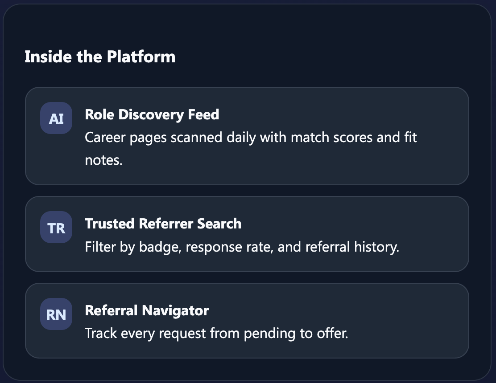

AI Product · Solo Designer & Builder
ReferLink —
AI Job Hunting Platform
A two-phase system solving the job search problem: a referral marketplace connecting job seekers with employees, layered with an AI agent that autonomously scrapes jobs, matches semantically, tailors resumes, and runs your search 24/7.
The Research
Two universal frustrations revealed a bigger opportunity
While job searching myself, I talked to others going through the same process to understand if my frustrations were universal or just mine.
The phrase "hard to find referral opportunities" came up repeatedly. People knew referrals were important — 70% of jobs are filled that way — but their networks didn't overlap with the companies they wanted to work for.
The deeper pattern: job searching takes an enormous amount of time. Most of it is repetitive work: checking job boards, tailoring resumes, searching for connections, tracking applications.
What job seekers said
"I feel weird asking strangers for help"
"I lose track of where I applied"
"I just want someone to tell me the 3 roles to apply to today"
What referrers said
They'll help strangers, but only with enough candidate info — shaped two-way visibility
They're worried about spam — influenced limiting simultaneous requests
The Strategy
Solve both problems, but in sequence
The strategic insight: you need to solve referral access AND search automation, but the order matters.
Phase 1
Referral Marketplace + Dashboard
Connect job seekers with employees who can refer. Give both sides a unified place to track everything. Solve the access problem first — create the infrastructure Phase 2 needs.
Phase 2
AI Agent (In Development)
Autonomous job discovery across 50+ sources. Semantic resume tailoring per job. Referral path finding. Application tracking. Runs 24/7 — you check the dashboard, not the job boards.
Why this order
Infrastructure before intelligence
You can't automate referral discovery without first having a referral network to tap into. Phase 1 creates the infrastructure. Phase 2 adds the intelligence layer on top.

Phase 1 — The Marketplace
This isn't a networking problem. It's a matching problem.
Employees would love to help people finding new jobs — and earn referral bonuses. Job seekers need introductions. Both sides want the same outcome. The platform matches them efficiently without requiring months of relationship-building first.
For job seekers
- Browse employees at target companies willing to refer
- Send low-stakes introduction requests (limit on simultaneous requests reduces spam)
- Track all referral conversations in one dashboard
- Combine with application tracking — one product for the entire search
For referrers
- See full candidate profile before agreeing to refer
- Match score shows why this person fits their company
- Control over who you help — no obligation to refer everyone
- Referral bonus tracking built in
Phase 2 — The AI Agent
Autonomous job search that runs while you sleep
Phase 1 solves referral access and tracking. But job searching still requires hours of daily manual work: searching across 50+ sources, reading descriptions, tailoring resumes, finding connections.
What the agent does
- Autonomous job discovery — continuously scrapes LinkedIn, Greenhouse, Lever, company career pages, detects opportunities within hours of publication
- Semantic matching — alerts only to high-priority matches, not every posting
- Resume tailoring — AI adapts resume language to match each job description automatically
- Referral path finding — identifies employees at target companies who can refer
- Application tracking — unified dashboard, status, and follow-ups
The stickiness insight
Referrals are episodic — you need one, then you're done until your next job search. The real challenge: how do you create daily engagement in a product people only need occasionally?
The AI agent solves stickiness. If it runs daily and surfaces opportunities, people check the dashboard daily. The sequencing isn't just technical — it's business model.
Design Principles
Transparency at every step
Learning from the LivePerson experience: AI recommendations only work if users trust them. Every match shows a clear explanation — which skills matched, which experience gaps exist, and why this role was surfaced. No black-box recommendations.
For candidates
See exactly why each job was matched. Control the search parameters. Review and approve before anything is sent.
For referrers
See candidate profile, match score, and why this person was selected for their company — before agreeing to refer.
For both
Human review at every critical step. AI does the legwork, humans make the decisions.
What I Learned
Key learnings from building a two-sided marketplace
Business strategy means thinking beyond features
Building a two-sided marketplace forced me to think about retention, not just functionality. This insight shaped the entire Phase 2 strategy.
Rapid prototyping ≠ shipping a real product
Lovable got me to a working prototype in days. Building the actual deployed product took weeks. I learned when to prototype (test unclear assumptions) versus when to just build (requirements are clear, execution matters).
The biggest learning
Build, ship, learn, iterate beats plan, plan, plan.
Actually putting something in front of users teaches you things interviews can't. Speed to learning matters more than speed to perfection.